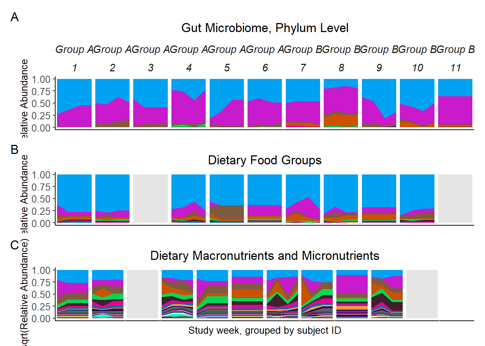

Last updated: 2020-06-08
Checks: 6 1
Knit directory: Fiber_Intervention_Study/
This reproducible R Markdown analysis was created with workflowr (version 1.6.2). The Checks tab describes the reproducibility checks that were applied when the results were created. The Past versions tab lists the development history.
The R Markdown file has unstaged changes. To know which version of the R Markdown file created these results, you’ll want to first commit it to the Git repo. If you’re still working on the analysis, you can ignore this warning. When you’re finished, you can run wflow_publish to commit the R Markdown file and build the HTML.
Great job! The global environment was empty. Objects defined in the global environment can affect the analysis in your R Markdown file in unknown ways. For reproduciblity it’s best to always run the code in an empty environment.
The command set.seed(20191210) was run prior to running the code in the R Markdown file. Setting a seed ensures that any results that rely on randomness, e.g. subsampling or permutations, are reproducible.
Great job! Recording the operating system, R version, and package versions is critical for reproducibility.
Nice! There were no cached chunks for this analysis, so you can be confident that you successfully produced the results during this run.
Great job! Using relative paths to the files within your workflowr project makes it easier to run your code on other machines.
Great! You are using Git for version control. Tracking code development and connecting the code version to the results is critical for reproducibility.
The results in this page were generated with repository version 774d405. See the Past versions tab to see a history of the changes made to the R Markdown and HTML files.
Note that you need to be careful to ensure that all relevant files for the analysis have been committed to Git prior to generating the results (you can use wflow_publish or wflow_git_commit). workflowr only checks the R Markdown file, but you know if there are other scripts or data files that it depends on. Below is the status of the Git repository when the results were generated:
Ignored files:
Ignored: .Rhistory
Ignored: .Rproj.user/
Ignored: code/.Rhistory
Ignored: reference-papers/Dietary_Variables.xlsx
Ignored: reference-papers/Johnson_2019.pdf
Untracked files:
Untracked: renv/
Untracked: tab/table_1_results.csv
Unstaged changes:
Deleted: .Rprofile
Modified: analysis/analysis_blood_data.Rmd
Modified: analysis/microbiome_diet_trends.Rmd
Modified: analysis/summary_stats.Rmd
Modified: code/get_cleaned_data.R
Modified: fig/figure4.pdf
Modified: fig/figure4_legend.pdf
Note that any generated files, e.g. HTML, png, CSS, etc., are not included in this status report because it is ok for generated content to have uncommitted changes.
These are the previous versions of the repository in which changes were made to the R Markdown (analysis/microbiome_diet_trends.Rmd) and HTML (docs/microbiome_diet_trends.html) files. If you’ve configured a remote Git repository (see ?wflow_git_remote), click on the hyperlinks in the table below to view the files as they were in that past version.
| File | Version | Author | Date | Message |
|---|---|---|---|---|
| html | d576bdd | noah-padgett | 2020-05-21 | tables outputted |
| Rmd | ef7cab9 | noah-padgett | 2020-05-14 | blood measure analyses |
| Rmd | 589bcf4 | noah-padgett | 2020-05-07 | updated figures |
| html | 589bcf4 | noah-padgett | 2020-05-07 | updated figures |
mphyseq = psmelt(phylo_data)
mphyseq2 <- mphyseq %>%
dplyr::group_by(SubjectID, Week) %>%
dplyr::mutate(Total = sum(Abundance)) %>%
dplyr::ungroup()%>%
dplyr::group_by(SubjectID, Week, Phylum) %>%
dplyr::mutate(PhylumAbund = sum(Abundance),
RelAbund = PhylumAbund/Total)
mphyseq2 <- mphyseq2 %>% distinct(SubjectID, Week, Phylum, .keep_all = T)
keepVar <- c("SubjectID", "Week", "Phylum", "Abundance", "RelAbund")
mphyseq2 <- mphyseq2[, keepVar]
# take out "__" at start of names
mphyseq2$Phylum <- substring(mphyseq2$Phylum, 3)
# Create New Other category for plotting
mphyseq3 <- mphyseq2 %>%
dplyr::group_by(SubjectID, Week, Phylum) %>%
dplyr::summarise(RelAbund = sum(RelAbund))
other <- mphyseq3 %>%
dplyr::group_by(SubjectID, Week) %>%
dplyr::summarise(RelAbund = 1 - sum(RelAbund))
other$Phylum <- "Other"
other <- other %>% select(SubjectID, Week, Phylum, RelAbund)
mphyseq2 <- full_join(mphyseq3, other)Joining, by = c("SubjectID", "Week", "Phylum", "RelAbund")# sort by highest average relative abundance
ph <- mphyseq2 %>%
dplyr::group_by(Phylum) %>%
dplyr::summarize(M = mean(RelAbund, na.rm=T))
micro_ord <- ph$Phylum[order(ph$M, decreasing = F)]
mphyseq2$Phylum <- factor(mphyseq2$Phylum, levels = rev(micro_ord))
# fix missing data and fill-out
MIS <- mphyseq2 %>%
group_by(SubjectID)%>%tidyr::expand(Week, Phylum)
micro_data <- full_join(mphyseq2, MIS)Joining, by = c("SubjectID", "Week", "Phylum")# add week 1 missing as 0
micro_data$RelAbund[micro_data$Week==1][is.na(micro_data$RelAbund[micro_data$Week==1])] <- 0
micro_data <- micro_data%>%
group_by(SubjectID, Phylum)%>%
fill(RelAbund)
micro_data$Week <- as.numeric(micro_data$Week)
# create order of subjects
so <- distinct(microbiome_data$meta.dat, SubjectID, .keep_all = T)
subjectorder <- so$SubjectID[order(so$Intervention, decreasing = F)]
micro_data$SubjectID <- factor(micro_data$SubjectID,
levels = subjectorder,
labels=c(1:11))
# get right number of colors for plotting
no_cols <- length(unique(micro_data$Phylum))
## Some Colors
colors_micro <- rev(c("grey90", rev(c("#00a2f2", "#c91acb", "#7f5940", "#cc5200", "#00d957", "#40202d", "#e60099", "#006fa6", "#f29d3d", "#300059"))))
# Intervention ID variable
ids <- 1:6
micro_data$Intervention <- ifelse(micro_data$SubjectID %in% ids, "Group A", "Group B")
# make the plot
micro_plot<-ggplot(data = micro_data, aes(x=Week, y = RelAbund, fill=Phylum)) +
geom_area(stat = "identity") +
facet_grid(.~Intervention + SubjectID, scales = "free") +
scale_fill_manual(values = colors_micro) +
lims(x=c(0.99, 4.01))+
theme_classic() +
theme(strip.text.x = element_text(angle = 0, size = 11, face = "italic"),
axis.text.x = element_blank(),
axis.ticks.x = element_blank(),
axis.text.y = element_text(size = 10),
axis.title = element_text(size = 10),
plot.title = element_text(hjust = 0.5),
axis.title.x = element_blank(),
strip.background = element_blank(),
legend.position = "right",
legend.text = element_text(size = 7),
legend.title = element_blank(),
panel.spacing.x=unit(0.001, "lines")) +
guides(fill = guide_legend(reverse = F,
keywidth = 0.5,
keyheight = 0.5,
ncol = 1)) +
labs(y="Relative Abundance",
title="Gut Microbiome, Phylum Level",
tag="A")
micro_plot# #Next, change strip color by intervention group
# g <- ggplot_gtable(ggplot_build(micro_plot))
# strip_both <- which(grepl('strip-', g$layout$name))
# fills <- c(rep("white", 6), rep("grey80", 5))
# k <- 1
# for (i in strip_both) {
# j <- which(grepl('rect', g$grobs[[i]]$grobs[[1]]$childrenOrder))
# g$grobs[[i]]$grobs[[1]]$children[[j]]$gp$fill <- fills[k]
# k <- k+1
# }
# grid::grid.draw(g)
#
#
# tag_facet2 <- function(p, open=" ", close = " ",
# tag_pool = letters,
# x = 0, y = 0.5,
# hjust = 0, vjust = 0.5,
# fontface = 2, ...){
#
# gb <- ggplot_build(p)
# lay <- gb$layout$layout
# nm <- names(gb$layout$facet$params$rows)
#
# tags <- paste0(open,tag_pool[unique(lay$COL)],close)
#
# tl <- lapply(tags, grid::textGrob, x=x, y=y,
# hjust=hjust, vjust=vjust, gp=grid::gpar(fontface=fontface))
#
# g <- ggplot_gtable(gb)
# g <- gtable::gtable_add_rows(g, grid::unit(1,"line"), pos = 0)
# lm <- unique(g$layout[grepl("panel",g$layout$name), "l"])
# g <- gtable::gtable_add_grob(g, grobs = tl, t=1, l=lm)
# grid::grid.newpage()
# grid::grid.draw(g)
# }
#
# IntGrp <- c(rep("A", 6), rep("B", 5))
# micro_plot2<-micro_plot + theme(legend.position = "none")
# micro_plot2
# tag_facet2(micro_plot2, tag_pool = IntGrp)Note: Subjects are ordered by Intervention: 1 to 6 are in Group A 7-11 are in group B
food_var <- colnames(diet.data)[4:12]
food_data <- as_tibble(diet.data[, c("SubjectID", "Week", food_var)])
# need to fill in "missing" data
MIS <- tidyr::expand(food_data, SubjectID, Week)
food_data <- full_join(food_data, MIS)Joining, by = c("SubjectID", "Week")food_data <- food_data%>%
group_by(SubjectID)%>%
fill(`Fats Oils and Salad Dressings`:`Grain Product`)
id <- paste0("id.", food_data$SubjectID,".wk.",food_data$Week)
food_data$MISSING <- apply(food_data, 1,
FUN = function(x){ sum(is.na(x)) })
food_data <- data.frame(t(food_data[,-c(1:2)]))
colnames(food_data) <- id
rownames(food_data) <- c(food_var, "MISSING")
food_data <- apply(food_data, c(1,2), FUN=function(x){ifelse(is.na(x), 0, x)})
food_data <- data.frame(food_data)
# Compute relative abundance
food_data <- sweep(food_data, 2, colSums(food_data), "/")
food_data[is.na(food_data)] <- 0
# sort by highest average relative abundance
food_data <- food_data[order(rowMeans(food_data), decreasing = F),]
# make food ordering factor
food_ord_factor <- as.character(rownames(food_data))
food_ord_factor <- food_ord_factor[food_ord_factor != "MISSING"]
food_ord_factor <- c("MISSING",food_ord_factor)
plot3 <- as.data.frame(t(food_data))
plot3 <- rownames_to_column(plot3, var = "SampleID")
plot3 <- reshape2::melt(plot3, id = "SampleID", variable.name = "Food")
# combine all "<x% abundance" foods into one for plotting
#plot3 <- plot3 %>% group_by(SampleID, Food) %>% dplyr::summarise(newvalue = sum(value))
# Extract ids and weeks
#plot3$SubjectID <- str_sub(plot3$SampleID, 4,7)
so <- distinct(microbiome_data$meta.dat, SubjectID, .keep_all = T)
subjectorder <- so$SubjectID[order(so$Intervention, decreasing = F)]
plot3$SubjectID <- factor(str_sub(plot3$SampleID, 4,7),
levels = subjectorder)
plot3$Week <- as.numeric(str_sub(plot3$SampleID, 12, 13))
# recode FOOD
plot3$Food <- as.factor(plot3$Food)
plot3$Food <- factor(plot3$Food, levels = rev(food_ord_factor))
# set seed to get nice colors
set.seed(3)
# get right number of colors for plotting
no_cols <- length(unique(plot3$Food))
## Some Colors
colors_food <- c("#00a2f2", "#c91acb", "#7f5940", "#cc5200", "#00d957", "#40202d", "#e60099", "#006fa6", "#f29d3d", "grey90")
# make the plot
food_plot<-ggplot(data = plot3, aes(x=Week, y = value, fill=Food)) +
geom_area(stat = "identity") +
facet_grid(.~SubjectID, scales = "free") +
scale_fill_manual(values = colors_food) +
lims(x=c(0.99, 4.01))+
theme_classic() +
theme(strip.text.x = element_blank(),
axis.text.x = element_blank(),
axis.ticks.x = element_blank(),
axis.text.y = element_text(size = 10),
axis.title = element_text(size = 10),
plot.title = element_text(hjust = 0.5),
axis.title.x = element_blank(),
strip.text = element_blank(),
strip.background = element_blank(),
legend.position = "right",
legend.text = element_text(size = 7),
legend.title = element_blank(),
panel.spacing.x=unit(0.001, "lines")) +
guides(fill = guide_legend(reverse = F,
keywidth = 0.5,
keyheight = 0.5,
ncol = 1)) +
#nrow = 5)) + # for full page figure
#nrow = 1)) + # for slide figure
labs(y="Relative Abundance",
title="Dietary Food Groups",
tag="B")
food_plot# Dietary Nurtrients
food_var <- colnames(diet.data)[14:54]
food_data <- as_tibble(diet.data[, c("SubjectID", "Week", food_var)])
# need to fill in "missing" data
MIS <- tidyr::expand(food_data, SubjectID, Week)
food_data <- full_join(food_data, MIS)Joining, by = c("SubjectID", "Week")food_data <- food_data%>%
group_by(SubjectID)%>%
fill(`Carbohydrates`:`Added Vitamin B-12`)
id <- paste0("id.", food_data$SubjectID,".wk.",food_data$Week)
food_data$MISSING <- apply(food_data, 1,
FUN = function(x){ sum(is.na(x)) })
food_data <- data.frame(t(food_data[,-c(1:2)]))
colnames(food_data) <- id
rownames(food_data) <- c(food_var, "MISSING")
food_data <- apply(food_data, c(1,2), FUN=function(x){ifelse(is.na(x), 0, x)})
food_data <- data.frame(food_data)
# Compute relative abundance
food_data <- sweep(food_data, 2, colSums(food_data), '/')
# compute sqrt
# sort by highest average relative abundance
food_data <- food_data[order(rowMeans(food_data), decreasing = F),]
rn <- rownames(food_data)
#food_data <- food_data[ rn[c(1:8, 10, 9)], ]
food_data$RowMeans <- rowMeans(food_data)
# make food ordering factor
food_ord_factor <- as.character(rownames(food_data))
food_ord_factor <- food_ord_factor[food_ord_factor != "MISSING"]
food_ord_factor <- c("MISSING",food_ord_factor)
plot3 <- as.data.frame(t(food_data))
plot3 <- rownames_to_column(plot3, var = "SampleID")
plot3 <- reshape2::melt(plot3, id = "SampleID", variable.name = "Food")
# Extract ids and weeks
#plot3$SubjectID <- str_sub(plot3$SampleID, 4,7)
so <- distinct(microbiome_data$meta.dat, SubjectID, .keep_all = T)
subjectorder <- so$SubjectID[order(so$Intervention, decreasing = F)]
plot3$SubjectID <- factor(str_sub(plot3$SampleID, 4,7),
levels = subjectorder)
plot3$Week <- as.numeric(str_sub(plot3$SampleID, 12, 13))
# recode FOOD
plot3$Food <- as.factor(plot3$Food)
plot3$Food <- factor(plot3$Food, levels = rev(food_ord_factor))
# set seed to get nice colors
set.seed(3)
plot3 %>%
dplyr::group_by(Week, SubjectID) %>%
dplyr::summarise(RA = sum(value))Warning: Factor `SubjectID` contains implicit NA, consider using
`forcats::fct_explicit_na`# A tibble: 45 x 3
# Groups: Week [5]
Week SubjectID RA
<dbl> <fct> <dbl>
1 1 1005 1
2 1 1008 1
3 1 1001 1
4 1 1003 1.00
5 1 1013 1
6 1 1009 1
7 1 1007 1
8 1 1010 1
9 1 1002 1.00
10 1 1015 1.00
# ... with 35 more rows# get right number of colors for plotting
no_cols <- length(unique(plot3$Food))
## Some Colors
colors_food <- c("#00a2f2", "#c91acb", "#7f5940", "#cc5200", "#00d957", "#40202d", "#e60099", "#006fa6", "#f29d3d", "#300059", "#566573", "#336655", "#83008c", "#d9a3aa", "#400009", "#0020f2", "#a3d936", "#8091ff", "#fbffbf", "#00ffcc", "#8c4f46", "#354020", "#39c3e6", "#333a66", "#ff0000", "#6a8040", "#a6538a", "#402910", "#730f00", "#0a4d00", "#ffe1bf", "#a3d9b1", "#003033", "#f29979", "#00b3a7", "#cbace6", "#bfd9ff", "#bf0000", "#293aa6", "#594943", "#e5c339", "grey90")
# make the plot
nutr_plot<-ggplot(data = plot3, aes(x=Week, y = value, fill=Food)) +
geom_area(stat = "identity") +
facet_grid(.~SubjectID, scales = "free") +
scale_fill_manual(values = colors_food) +
lims(x=c(0.99, 4.01))+
theme_classic() +
theme(strip.text.x = element_blank(),
axis.text.x = element_blank(),
axis.ticks.x = element_blank(),
axis.text.y = element_text(size = 10),
axis.title = element_text(size = 10),
plot.title = element_text(hjust = 0.5),
#axis.title.x = element_blank(),
strip.background = element_blank(),
legend.position = "right",
legend.text = element_text(size = 7),
legend.title = element_blank(),
panel.spacing.x=unit(0.01, "lines")) +
guides(fill = guide_legend(reverse = F,
keywidth = 0.5,
keyheight = 0.5,
ncol = 1)) +
#nrow = 5)) + # for full page figure
#nrow = 1)) + # for slide figure
labs(y="sqrt(Relative Abundance)",
x = "Study week, grouped by subject ID",
title="Dietary Macronutrients and Micronutrients",
tag="C")
nutr_plotWarning: Removed 42 rows containing missing values (position_stack).A double check on nutrient ordering
diet.data <- read_xlsx("data/analysis-data/Dietary_Variables.xlsx")
diet.data <- diet.data %>%
mutate(SubjectID = as.numeric(substr(SubjectID, 7,11)),
Week = RecallNo)
food_var <- colnames(diet.data)[14:54]
food_data <- as_tibble(diet.data[, c("SubjectID", "Week", food_var)])
food_data <- food_data %>%
mutate(rowsum = rowSums(.[,-1:-2]))
food_data[, food_var] <- food_data[, food_var]/food_data$rowsum
kable(food_data, format="html", digits=3) %>%
kable_styling(full_width = T)%>%
scroll_box(width = "100%", height = "400px")| SubjectID | Week | Carbohydrates | Total Fat | Protein | Sugars, total | Fiber, total dietary | Sodium | Potassium | Phosphorus | Alcohol | Calcium | Magnesium | Chloine, total | Cholesterol | Caffine | Vitamin C | Theobromine | Niacin | Iron | Zinc | Vitamin E, alpha-tocopherol | Carotene, beta | Lutein + zeaxanthin | Lycopene | Riboflavin | Vitamin B-6 | Thiamin | Copper | Vitamin A | Folate | Retinol | Folate, total | Carotene, alpha | Added Vitamin E | Folate, food | Vitamin K, phylloquinone | Folic acid | Selenium | Cryptoxanthin, beta | Vitamin D (D2 + D3) | Vitamin B-12 | Added Vitamin B-12 | rowsum |
|---|---|---|---|---|---|---|---|---|---|---|---|---|---|---|---|---|---|---|---|---|---|---|---|---|---|---|---|---|---|---|---|---|---|---|---|---|---|---|---|---|---|---|---|
| 1002 | 1 | 0.006 | 0.002 | 0.002 | 0.001 | 0.001 | 0.105 | 0.083 | 0.066 | 0.000 | 0.033 | 0.015 | 0.010 | 0.009 | 0.005 | 0.001 | 0.000 | 0.001 | 0.001 | 0.001 | 0.000 | 0.028 | 0.036 | 0.373 | 0 | 0 | 0 | 0 | 0.025 | 0.073 | 0.023 | 0.044 | 0.003 | 0.000 | 0.004 | 0.001 | 0.040 | 0.003 | 0.001 | 0.000 | 0.001 | 0.001 | 26849.91 |
| 1003 | 1 | 0.007 | 0.004 | 0.003 | 0.005 | 0.000 | 0.155 | 0.091 | 0.055 | 0.000 | 0.046 | 0.009 | 0.022 | 0.028 | 0.006 | 0.008 | 0.002 | 0.000 | 0.000 | 0.000 | 0.000 | 0.259 | 0.163 | 0.000 | 0 | 0 | 0 | 0 | 0.043 | 0.015 | 0.021 | 0.014 | 0.003 | 0.000 | 0.013 | 0.013 | 0.001 | 0.004 | 0.003 | 0.000 | 0.000 | 0.000 | 28525.77 |
| 1003 | 2 | 0.013 | 0.005 | 0.005 | 0.007 | 0.001 | 0.170 | 0.113 | 0.068 | 0.000 | 0.053 | 0.013 | 0.027 | 0.032 | 0.008 | 0.003 | 0.006 | 0.001 | 0.001 | 0.000 | 0.000 | 0.090 | 0.087 | 0.095 | 0 | 0 | 0 | 0 | 0.037 | 0.026 | 0.027 | 0.020 | 0.052 | 0.000 | 0.012 | 0.009 | 0.008 | 0.007 | 0.002 | 0.000 | 0.000 | 0.000 | 18197.68 |
| 1003 | 3 | 0.017 | 0.005 | 0.007 | 0.007 | 0.002 | 0.212 | 0.198 | 0.086 | 0.001 | 0.026 | 0.024 | 0.026 | 0.015 | 0.006 | 0.007 | 0.006 | 0.002 | 0.001 | 0.001 | 0.001 | 0.117 | 0.048 | 0.000 | 0 | 0 | 0 | 0 | 0.026 | 0.032 | 0.014 | 0.027 | 0.039 | 0.000 | 0.019 | 0.011 | 0.007 | 0.006 | 0.004 | 0.000 | 0.000 | 0.000 | 15033.60 |
| 1003 | 4 | 0.010 | 0.006 | 0.004 | 0.004 | 0.001 | 0.200 | 0.123 | 0.076 | 0.001 | 0.050 | 0.012 | 0.030 | 0.043 | 0.006 | 0.001 | 0.008 | 0.001 | 0.001 | 0.001 | 0.000 | 0.019 | 0.071 | 0.163 | 0 | 0 | 0 | 0 | 0.042 | 0.027 | 0.040 | 0.022 | 0.002 | 0.000 | 0.015 | 0.003 | 0.007 | 0.007 | 0.003 | 0.000 | 0.000 | 0.000 | 14478.97 |
| 1005 | 1 | 0.015 | 0.005 | 0.004 | 0.006 | 0.001 | 0.205 | 0.127 | 0.068 | 0.001 | 0.051 | 0.011 | 0.012 | 0.009 | 0.010 | 0.001 | 0.000 | 0.001 | 0.001 | 0.001 | 0.000 | 0.021 | 0.013 | 0.373 | 0 | 0 | 0 | 0 | 0.006 | 0.017 | 0.005 | 0.013 | 0.002 | 0.000 | 0.007 | 0.002 | 0.006 | 0.004 | 0.001 | 0.000 | 0.000 | 0.000 | 15508.15 |
| 1005 | 2 | 0.011 | 0.006 | 0.004 | 0.003 | 0.001 | 0.272 | 0.130 | 0.065 | 0.000 | 0.033 | 0.015 | 0.033 | 0.033 | 0.005 | 0.004 | 0.001 | 0.001 | 0.001 | 0.001 | 0.001 | 0.019 | 0.061 | 0.203 | 0 | 0 | 0 | 0 | 0.020 | 0.017 | 0.018 | 0.015 | 0.001 | 0.000 | 0.011 | 0.003 | 0.004 | 0.005 | 0.002 | 0.000 | 0.000 | 0.000 | 24397.63 |
| 1007 | 1 | 0.016 | 0.007 | 0.005 | 0.007 | 0.001 | 0.221 | 0.104 | 0.097 | 0.000 | 0.081 | 0.016 | 0.010 | 0.012 | 0.003 | 0.001 | 0.014 | 0.001 | 0.001 | 0.001 | 0.001 | 0.028 | 0.018 | 0.255 | 0 | 0 | 0 | 0 | 0.021 | 0.021 | 0.018 | 0.014 | 0.001 | 0.000 | 0.006 | 0.004 | 0.009 | 0.005 | 0.003 | 0.000 | 0.000 | 0.000 | 18556.93 |
| 1007 | 2 | 0.010 | 0.003 | 0.003 | 0.003 | 0.001 | 0.161 | 0.068 | 0.039 | 0.000 | 0.024 | 0.008 | 0.012 | 0.015 | 0.001 | 0.001 | 0.008 | 0.001 | 0.001 | 0.000 | 0.000 | 0.215 | 0.283 | 0.000 | 0 | 0 | 0 | 0 | 0.024 | 0.037 | 0.006 | 0.027 | 0.000 | 0.000 | 0.013 | 0.016 | 0.014 | 0.005 | 0.000 | 0.000 | 0.000 | 0.000 | 21816.63 |
| 1007 | 3 | 0.020 | 0.003 | 0.003 | 0.013 | 0.001 | 0.145 | 0.087 | 0.077 | 0.000 | 0.066 | 0.012 | 0.009 | 0.007 | 0.010 | 0.000 | 0.016 | 0.001 | 0.001 | 0.000 | 0.000 | 0.020 | 0.005 | 0.381 | 0 | 0 | 0 | 0 | 0.026 | 0.027 | 0.024 | 0.019 | 0.000 | 0.000 | 0.008 | 0.001 | 0.011 | 0.005 | 0.000 | 0.000 | 0.000 | 0.000 | 14145.27 |
| 1007 | 4 | 0.010 | 0.005 | 0.004 | 0.007 | 0.001 | 0.142 | 0.161 | 0.085 | 0.000 | 0.080 | 0.021 | 0.011 | 0.014 | 0.004 | 0.005 | 0.016 | 0.001 | 0.001 | 0.001 | 0.002 | 0.102 | 0.139 | 0.000 | 0 | 0 | 0 | 0 | 0.054 | 0.029 | 0.045 | 0.021 | 0.000 | 0.001 | 0.010 | 0.012 | 0.011 | 0.004 | 0.000 | 0.000 | 0.000 | 0.000 | 23309.16 |
| 1008 | 2 | 0.006 | 0.004 | 0.004 | 0.001 | 0.000 | 0.210 | 0.084 | 0.053 | 0.000 | 0.034 | 0.009 | 0.013 | 0.014 | 0.001 | 0.003 | 0.000 | 0.001 | 0.000 | 0.000 | 0.000 | 0.186 | 0.132 | 0.085 | 0 | 0 | 0 | 0 | 0.031 | 0.014 | 0.013 | 0.012 | 0.056 | 0.000 | 0.010 | 0.010 | 0.003 | 0.005 | 0.001 | 0.000 | 0.000 | 0.000 | 27246.72 |
| 1008 | 1 | 0.011 | 0.006 | 0.004 | 0.006 | 0.001 | 0.201 | 0.136 | 0.110 | 0.000 | 0.088 | 0.014 | 0.024 | 0.030 | 0.009 | 0.003 | 0.002 | 0.001 | 0.001 | 0.000 | 0.000 | 0.012 | 0.040 | 0.147 | 0 | 0 | 0 | 0 | 0.052 | 0.017 | 0.051 | 0.013 | 0.001 | 0.000 | 0.009 | 0.003 | 0.005 | 0.004 | 0.001 | 0.000 | 0.000 | 0.000 | 22567.54 |
| 1009 | 1 | 0.011 | 0.004 | 0.004 | 0.006 | 0.001 | 0.147 | 0.119 | 0.071 | 0.000 | 0.078 | 0.013 | 0.011 | 0.015 | 0.003 | 0.007 | 0.001 | 0.001 | 0.001 | 0.000 | 0.000 | 0.174 | 0.071 | 0.142 | 0 | 0 | 0 | 0 | 0.034 | 0.022 | 0.020 | 0.017 | 0.002 | 0.000 | 0.010 | 0.004 | 0.007 | 0.004 | 0.001 | 0.000 | 0.000 | 0.000 | 20245.19 |
| 1010 | 1 | 0.005 | 0.003 | 0.002 | 0.002 | 0.001 | 0.113 | 0.082 | 0.041 | 0.000 | 0.034 | 0.007 | 0.015 | 0.013 | 0.007 | 0.003 | 0.001 | 0.002 | 0.000 | 0.000 | 0.000 | 0.546 | 0.021 | 0.000 | 0 | 0 | 0 | 0 | 0.057 | 0.009 | 0.011 | 0.008 | 0.001 | 0.000 | 0.006 | 0.003 | 0.002 | 0.004 | 0.000 | 0.000 | 0.000 | 0.000 | 25914.40 |
| 1010 | 2 | 0.008 | 0.004 | 0.005 | 0.002 | 0.001 | 0.223 | 0.080 | 0.073 | 0.000 | 0.056 | 0.011 | 0.012 | 0.009 | 0.000 | 0.002 | 0.000 | 0.002 | 0.002 | 0.001 | 0.000 | 0.011 | 0.022 | 0.264 | 0 | 0 | 0 | 0 | 0.039 | 0.055 | 0.038 | 0.035 | 0.001 | 0.000 | 0.006 | 0.004 | 0.029 | 0.005 | 0.002 | 0.000 | 0.000 | 0.000 | 16252.65 |
| 1010 | 3 | 0.011 | 0.007 | 0.006 | 0.003 | 0.002 | 0.253 | 0.134 | 0.121 | 0.000 | 0.097 | 0.015 | 0.036 | 0.053 | 0.009 | 0.004 | 0.000 | 0.001 | 0.001 | 0.001 | 0.001 | 0.013 | 0.067 | 0.000 | 0 | 0 | 0 | 0 | 0.043 | 0.025 | 0.041 | 0.020 | 0.000 | 0.000 | 0.013 | 0.004 | 0.007 | 0.009 | 0.002 | 0.000 | 0.000 | 0.000 | 10591.49 |
| 1013 | 1 | 0.007 | 0.002 | 0.004 | 0.003 | 0.001 | 0.182 | 0.111 | 0.053 | 0.000 | 0.037 | 0.012 | 0.012 | 0.009 | 0.001 | 0.001 | 0.000 | 0.001 | 0.000 | 0.000 | 0.000 | 0.033 | 0.022 | 0.455 | 0 | 0 | 0 | 0 | 0.016 | 0.005 | 0.013 | 0.005 | 0.001 | 0.000 | 0.005 | 0.002 | 0.000 | 0.004 | 0.004 | 0.000 | 0.000 | 0.000 | 35798.43 |
| 1013 | 2 | 0.004 | 0.004 | 0.010 | 0.000 | 0.000 | 0.234 | 0.171 | 0.144 | 0.000 | 0.026 | 0.020 | 0.043 | 0.035 | 0.000 | 0.001 | 0.000 | 0.005 | 0.001 | 0.000 | 0.001 | 0.053 | 0.051 | 0.085 | 0 | 0 | 0 | 0 | 0.021 | 0.015 | 0.017 | 0.012 | 0.000 | 0.000 | 0.009 | 0.004 | 0.004 | 0.026 | 0.000 | 0.002 | 0.001 | 0.000 | 11174.27 |
| 1015 | 1 | 0.005 | 0.005 | 0.003 | 0.001 | 0.001 | 0.137 | 0.132 | 0.048 | 0.000 | 0.034 | 0.011 | 0.012 | 0.015 | 0.006 | 0.003 | 0.001 | 0.001 | 0.000 | 0.001 | 0.000 | 0.225 | 0.219 | 0.027 | 0 | 0 | 0 | 0 | 0.032 | 0.016 | 0.013 | 0.015 | 0.001 | 0.000 | 0.013 | 0.017 | 0.001 | 0.003 | 0.000 | 0.000 | 0.000 | 0.000 | 21693.41 |
| 1015 | 2 | 0.006 | 0.005 | 0.005 | 0.003 | 0.001 | 0.180 | 0.129 | 0.096 | 0.000 | 0.080 | 0.013 | 0.033 | 0.036 | 0.000 | 0.008 | 0.007 | 0.001 | 0.000 | 0.000 | 0.000 | 0.066 | 0.185 | 0.000 | 0 | 0 | 0 | 0 | 0.044 | 0.011 | 0.038 | 0.011 | 0.000 | 0.000 | 0.011 | 0.018 | 0.000 | 0.006 | 0.001 | 0.001 | 0.001 | 0.000 | 16721.25 |
| 1015 | 3 | 0.003 | 0.002 | 0.003 | 0.001 | 0.001 | 0.129 | 0.082 | 0.039 | 0.000 | 0.021 | 0.008 | 0.014 | 0.019 | 0.008 | 0.001 | 0.002 | 0.001 | 0.000 | 0.000 | 0.000 | 0.155 | 0.180 | 0.257 | 0 | 0 | 0 | 0 | 0.022 | 0.010 | 0.009 | 0.010 | 0.000 | 0.000 | 0.010 | 0.009 | 0.000 | 0.003 | 0.000 | 0.000 | 0.000 | 0.000 | 28625.52 |
| 1001 | 1 | NA | NA | NA | NA | NA | NA | NA | NA | NA | NA | NA | NA | NA | NA | NA | NA | NA | NA | NA | NA | NA | NA | NA | NA | NA | NA | NA | NA | NA | NA | NA | NA | NA | NA | NA | NA | NA | NA | NA | NA | NA | NA |
| 1012 | 1 | NA | NA | NA | NA | NA | NA | NA | NA | NA | NA | NA | NA | NA | NA | NA | NA | NA | NA | NA | NA | NA | NA | NA | NA | NA | NA | NA | NA | NA | NA | NA | NA | NA | NA | NA | NA | NA | NA | NA | NA | NA | NA |
out <- food_data[, food_var] %>%
mutate(rowsum = rowSums(.))
out$rowsum [1] 1 1 1 1 1 1 1 1 1 1 1 1 1 1 1 1 1 1 1 1 1 1 NA NA##### MAKE THE ACTUAL FIGURE ###########
# combine into one big plot
get_legend <- function(p) {
tmp <- ggplot_gtable(ggplot_build(p))
leg <- which(sapply(tmp$grobs, function(x) x$name) == "guide-box")
legend <- tmp$grobs[[leg]]
legend
}
micro_plot_leg <- get_legend(micro_plot)
food_plot_leg <- get_legend(food_plot)
nutr_plot_leg <- get_legend(nutr_plot)Warning: Removed 42 rows containing missing values (position_stack).# and replot suppressing the legend
micro_plot_1 <- micro_plot + theme(legend.position='none')
food_plot_1 <- food_plot + theme(legend.position='none')
nutr_plot_1 <- nutr_plot + theme(legend.position='none')
p <- micro_plot_1 + food_plot_1 + nutr_plot_1 + plot_layout(ncol=1)
pWarning: Removed 42 rows containing missing values (position_stack).
ggsave("fig/figure4.pdf", p, units="in", width=7.9,height=6.5)Warning: Removed 42 rows containing missing values (position_stack).library(cowplot)
bigplotlegend <- plot_grid(micro_plot_leg, food_plot_leg, nutr_plot_leg, nrow =1, align = "h")
save_plot("fig/figure4_legend.pdf", bigplotlegend, base_width = 13.25, base_height = 5)
sessionInfo()R version 3.6.3 (2020-02-29)
Platform: x86_64-w64-mingw32/x64 (64-bit)
Running under: Windows 10 x64 (build 18362)
Matrix products: default
locale:
[1] LC_COLLATE=English_United States.1252
[2] LC_CTYPE=English_United States.1252
[3] LC_MONETARY=English_United States.1252
[4] LC_NUMERIC=C
[5] LC_TIME=English_United States.1252
attached base packages:
[1] stats graphics grDevices utils datasets methods base
other attached packages:
[1] cowplot_1.0.0 microbiome_1.8.0 car_3.0-8 carData_3.0-4
[5] gvlma_1.0.0.3 patchwork_1.0.0 viridis_0.5.1 viridisLite_0.3.0
[9] gridExtra_2.3 xtable_1.8-4 kableExtra_1.1.0 plyr_1.8.6
[13] data.table_1.12.8 readxl_1.3.1 forcats_0.5.0 stringr_1.4.0
[17] dplyr_0.8.5 purrr_0.3.4 readr_1.3.1 tidyr_1.1.0
[21] tibble_3.0.1 ggplot2_3.3.0 tidyverse_1.3.0 lmerTest_3.1-2
[25] lme4_1.1-23 Matrix_1.2-18 vegan_2.5-6 lattice_0.20-38
[29] permute_0.9-5 phyloseq_1.30.0
loaded via a namespace (and not attached):
[1] Rtsne_0.15 minqa_1.2.4 colorspace_1.4-1
[4] rio_0.5.16 ellipsis_0.3.1 rprojroot_1.3-2
[7] XVector_0.26.0 fs_1.4.1 rstudioapi_0.11
[10] farver_2.0.3 fansi_0.4.1 lubridate_1.7.8
[13] xml2_1.3.2 codetools_0.2-16 splines_3.6.3
[16] knitr_1.28 ade4_1.7-15 jsonlite_1.6.1
[19] workflowr_1.6.2 nloptr_1.2.2.1 broom_0.5.6
[22] cluster_2.1.0 dbplyr_1.4.4 BiocManager_1.30.10
[25] compiler_3.6.3 httr_1.4.1 backports_1.1.7
[28] assertthat_0.2.1 cli_2.0.2 later_1.0.0
[31] htmltools_0.4.0 tools_3.6.3 igraph_1.2.5
[34] gtable_0.3.0 glue_1.4.1 reshape2_1.4.4
[37] Rcpp_1.0.4.6 Biobase_2.46.0 cellranger_1.1.0
[40] vctrs_0.3.0 Biostrings_2.54.0 multtest_2.42.0
[43] ape_5.3 nlme_3.1-144 iterators_1.0.12
[46] xfun_0.14 openxlsx_4.1.5 rvest_0.3.5
[49] lifecycle_0.2.0 statmod_1.4.34 zlibbioc_1.32.0
[52] MASS_7.3-51.5 scales_1.1.1 hms_0.5.3
[55] promises_1.1.0 parallel_3.6.3 biomformat_1.14.0
[58] rhdf5_2.30.1 curl_4.3 yaml_2.2.1
[61] stringi_1.4.6 highr_0.8 S4Vectors_0.24.4
[64] foreach_1.5.0 BiocGenerics_0.32.0 zip_2.0.4
[67] boot_1.3-24 rlang_0.4.6 pkgconfig_2.0.3
[70] evaluate_0.14 Rhdf5lib_1.8.0 labeling_0.3
[73] tidyselect_1.1.0 magrittr_1.5 R6_2.4.1
[76] IRanges_2.20.2 generics_0.0.2 DBI_1.1.0
[79] foreign_0.8-75 pillar_1.4.4 haven_2.3.0
[82] whisker_0.4 withr_2.2.0 mgcv_1.8-31
[85] abind_1.4-5 survival_3.1-8 modelr_0.1.8
[88] crayon_1.3.4 utf8_1.1.4 rmarkdown_2.1
[91] grid_3.6.3 blob_1.2.1 git2r_0.27.1
[94] reprex_0.3.0 digest_0.6.25 webshot_0.5.2
[97] httpuv_1.5.2 numDeriv_2016.8-1.1 stats4_3.6.3
[100] munsell_0.5.0